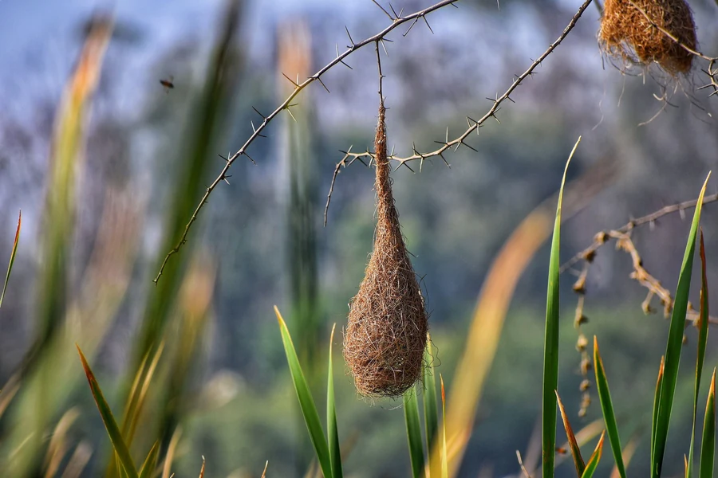

Cuentos y lírica
Una compilación literaria que convive con las emociones: escritura que deja atrás la fábula para convertir el mutismo en asombro y creatividad.

El refugio del talento“Voló hierberito. Entre charamuscas se refugió.”
Las charamuscas son pajitas secas, hierba endeble. Y son, también, la barrera invisible que ampara al niño frente a la incomprensión — protegiéndolo hasta el día en que llega un maestro capaz de valorar su voz, incluso en sus ocurrencias.
El nido es mucho más que la suma de sus materiales. Las pajitas no están al azar: se organizan con un propósito vital, como una espiral de cuidado y empatía.
“Los elementos, bien ubicados, hacen un refugio para que los pichones se sientan más suave y cómodo.”
Este es el rincón donde Raquel irá publicando su escritura: cuentos, poemas y la voz de los niños del territorio. Vuelve pronto.
Acompaño a docentes y estudiantes que quieren encontrar su voz y dar forma a sus textos.
Conoce las asesorías →